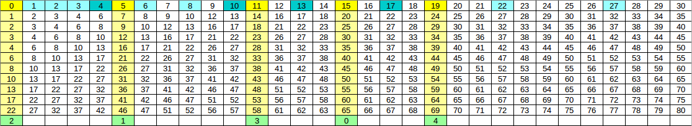

有一张纸条，上面有无穷多个格子，从 $0$ 开始编号。初始时，编号为 $i$ 的格子上有一个编号为 $i$ 的小球。
在纸条上有 $n$ 个洞，位置分别为 $a_1, a_2, \cdots, a_n$。每个位置上至多有一个洞。
我们如下定义 "过滤" 操作：
掉落：所有洞同时打开，在洞上面的小球全部掉到洞里。当所有球掉入洞后，所有洞同时关闭。
补空：按照从 $0$ 到 $+ \infty$ 的顺序，对于每个有球的格子 $i$，如果 $0 \sim i - 1$ 上都有球，则该球仍在位置 $i$；否则，我们将该球移到此时具有最小编号的没有球的格子 $j$ (ps: 相当于 "向左看齐" 操作)。
容易发现，每次 "过滤" 操作后，每个格子上仍然恰好包含一个球。
举个栗子，在纸条上，$1, 3, 4$ 的位置上有一个洞，则初始状态如下 (红色位置表示有洞的格子)：
[ 0] [ 1] [ 2] [ 3] [ 4] [ 5] [ 6] [ 7] [ 8] [ 9]
第一次 "过滤" 的 "掉落" 操作后，状态如下：
[ 0] [ ] [ 2] [ ] [ ] [ 5] [ 6] [ 7] [ 8] [ 9]
"补空" 操作后，整个纸条的状态如下：
[ 0] [ 2] [ 5] [ 6] [ 7] [ 8] [ 9] [10] [11] [12]
第二次 "过滤" 操作后，纸条的状态如下：
[ 0] [ 5] [ 8] [ 9] [10] [11] [12] [13] [14] [15]
你需要回答 $m$ 个问题，每个问题形如 "在连续 $k_i$ 次 '过滤' 操作后，位置 $x_i$ 上的球的编号是多少？"。询问之间相互独立。
第一行包含两个正整数 $n, m$ ($n, m \leq 10^5$)，表示纸条上洞的个数和询问的个数。
第二行包含 $n$ 个非负整数 $a_1, a_2, \cdots, a_n$ ($0 \leq a_1 < a_2 < \cdots < a_n \leq 10^9$)，从小到大给出所有洞的位置。
接下来的 $m$ 行，每行包含两个非负整数 $x_i, k_i$ ($0 \leq x_i, k_i \leq 10^9$)，描述一组询问。
对于每组询问，输出一行一个整数，表示每个询问的答案 (球的编号)。
首先可以发现 (性质 1)：在 $\left[ 0, a_1 \right)$ 中的球的状态自始至终不会改变，且其它球的改变状态遵循下列规则：令 $a'_i = a_i - a_1$，位置 $i$ 上的球的编号为 $f(k, i)$，则原来状态中，位置 $i$ ($i \geq a_1$) 上的球的编号为 $f \left( k, i - a_0 \right) + a_0$。
因此对于 $x < a_1$ 的询问，直接输出 $x$ 即可。故现在不妨假设 $0 = a_1 < a_2 < \cdots < a_n$。观察下图，我们要探究它的一些结论：
上图是 $n = 5; \left\{ a_1, a_2, a_3, a_4, a_5 \right\} = \{0, 5, 11, 15, 19\}$ 的情形。现总结性质如下：
性质 2：设第一次 "过滤" 后，位置 $i$ 上的球的编号从 $i$ 变成了 $j$，则任何一次 "过滤" 时，如果某个位置上的球编号为 $i$，过滤后编号也会变成 $j$。
换句话说，设第一次过滤后，位置 $i$ 上的球的编号变成了 $f(i)$ (称为 $i$ 的后继)，则每一次过滤时，如果原来球的编号为 $i$，过滤后也将变成 $f(i)$，从而 $k$ 次过滤后位置 $i$ 上的球的编号为 $f^{(k)} (i)$ (其中 $f^{(k)} (i)$ 表示 $i$ 的 $k$ 次迭代)。
证明：考虑 $i, f(i), f(f(i))$。我们只需证明，第二次过滤时，位置 $i$ 上的球变成了 $f(f(i))$。而这是因为，第一次过滤后，位置 $i$ 上的球为 $f(i)$，位置 $f(i)$ 上的球为 $f(f(i))$。因此第一次过滤的过程告诉我们，每一次过滤，位置 $f(i)$ 上的球将会 "取代" 位置 $i$ 上的球。因此，第二次过滤时，位置 $i$ 上的球就变成了 $f(f(i))$。$k \geq 2$ 时同理，可以用数学归纳法证明。证毕。
这已经将问题简化了一大步。因为，只要我们现在搞清楚 $f(i)$ 的性质，那么，每次询问就是问 $f^{(k)} (x)$ 的值是多少。
性质 3：当 $x$ 充分大 ($x \geq a_n$) 时，$f(x) = x + n$。
证明略。这个性质启发我们，当 $x$ 很大时，这些询问其实是可以直接计算的。同理，当 $k$ 很大时，由于 $f(x) > x$，因此 $x$ 会在 $O \left( a_n \right)$ 步超越 $a_n$，此时 $f^{(k)} (x)$ 的计算就得到了很大简化。
下一个性质可能用途不是很大，但这里也叙述一下：
性质 4：考虑 $5$ 个黄色区域 (洞) 接收的球的编号：当 $x$ 充分大 ($x \geq a_n$) 时，每个洞接收的球的编号就是 $\bmod n$ 的一个剩余类。它们的并构成自然数集 $\mathbb N$。
这是因为，$f(x) = x + n$ ($x \geq a_n$)，因此当一个洞收到编号为 $i$ ($i \geq a_n$) 的球时，下一个球的编号必定是 $i + n$ (性质 2)。
接下来的性质，将会和 $0$ 的 "轨道" 有关：
定义 1：定义 $x$ 的 "轨道" 为一个序列：$\mathcal O(x) = \left \{ x, f(x), f(f(x)), f^{(3)}(x), \cdots \right\}$，其中第 $i$ ($i \geq 0$) 项等于 $f^{(i)} (x)$。容易发现，$\mathcal O \left( a_i \right)$ 就是第 $i$ 个洞接收到的所有球的编号。
由性质 4，有 $\mathcal O(0) \cup \mathcal O \left( a_2 \right) \cup \cdots \mathcal O \left( a_n \right) = \mathbb N$。于是，我们就把 $\mathbb N$ 划分成了 $n$ 个集合。而其它的轨道，一定是某个 $\mathcal O \left( a_i \right)$ ($1 \leq i \leq n$) 的子轨道。
特别地，$0$ 的 "轨道" $\mathcal O(0)$ 比较特殊，我们重点研究它。
性质 5：$\mathcal O(0)$ 由若干段 (可能为空的) 等差数列构成，公差分别为 $1, 2, \cdots, n$。
由 $f(x)$ 定义容易证明，证明略。
我们将公差为 $d$ 的等差数列的最后一个元素称为关键点 $K_d$。特别地，如果公差为 $d$ 的等差数列为空，则规定 $K_d = K_{d-1}$。
比如，上图中，$\left\{ K_1, K_2, K_3, K_4 \right\} = \{4, 10, 13, 17\}$。
注意到，对于每个关键点 $K_d$，都有 $K_d < a_{d+1} < f \left( K_d \right)$。
考虑 $K_d$ 和 $f \left( K_d \right)$ 之间的 $d$ 个元素 (容易证明恰好是 $d$ 个)，可以注意到，它们所属的轨道 (这里的轨道指的是 $n$ 个比较重要的轨道)。
因此，将 $d$ 从大到小 (从 $n - 1$ 到 $1$) 考虑，我们得到了如下性质：
性质 6：对于每个 $0 \leq d < n$，可以归纳构造一个大小为 $d$ 的集合 $\mathcal S_d$：
对于 $d = n - 1$，有 $\mathcal S_d = \{1, 2, \cdots, n - 1\}$。
对于 $K_d < a_{d+1} < f \left( K_d \right)$，设 $x = a_{d+1} - K_d$ ($1 \leq x \leq d$)，则令 $\mathcal S_{d-1} = \mathcal S_d \setminus \{y\}$，其中 $y$ 是 $\mathcal S_d$ 中第 $x$ 小的元素。
这样构造出来的 $S_d$ 满足如下性质：对于一对 $\left( i, f(i) \right)$，且 $i \in \mathcal O(0)$，设 $K_d \leq i < K_{d+1}$，则 $i$ 与 $f(i)$ 之间有 $d$ 个元素，设 $\mathcal S_d = \left\{ c_1, c_2, \cdots, c_d \right\}$，则 $i + j$ 所属的轨道，就是 $K_{n-1} + c_j$ 所属的轨道。
由 $\mathcal S_d$ 的构造过程容易归纳证明。现举例如下：
如上图，则有 $\mathcal S_4 = \{1, 2, 3, 4\}$，因为 $a_5 - S_4 = 2$，所以 $\mathcal S_3 = \{1, 3, 4\}$；
又因为 $a_4 - S_3 = 2$，故 $\mathcal S_2 = \{1, 4\}$；
又由 $a_3 - S_2 = 1$ 得 $\mathcal S_1 = \{4\}$；
最后由 $a_2 - S_1 = 1$ 得 $\mathcal S_0 = \varnothing$。
现考虑数对 $\left( 8, 10 \right)$，它满足 $K_1 = 4 \leq 8 < K_2 = 10$，因此 $8 \sim 10$ 之间有 $1$ 个元素，且 $\mathcal S_1 = \{4\}$，因此 $9 = 8 + 1$ 所属的轨道，就等于 $K_4 + 4 = 21$ 所属的轨道 (均为 $\mathcal O(5)$)。
由上面这些性质作铺垫，我们现在就得到了一个算法：
这个算法的第一步，也是最重要的第一步，就是给定 $k$，求 $f^{(k)} (0)$，即求轨道 $\mathcal O(0)$ 的第 $k$ 项。
具体怎么求呢？如果你注意到关键点 $K_d$，就应该不难了。
首先，你可以通过二分法求得 $\mathcal O(0)$ 的第 $k$ 项所处的等差数列的公差，然后得到它应该属于该等差数列的第几项，最后通过 $K_{d-1} + m \cdot d$ 等公式计算。
因此，现在如果 $x \in \mathcal O(0)$，我们已经解决了，因为只需再二分得到 $x_i$ 是 $\mathcal O(0)$ 的第 $L$ 项，然后就是询问 $\mathcal O(0)$ 的第 $L + k$ 项。
那如果 $x \notin \mathcal O(0)$ 又该怎么办呢？
其实有了性质 6，这个问题也不难。因为，我们只需找到 $i \in \mathcal O(0)$，使得 $i < x < f(i)$，然后我们就到了 $x$ 所在的轨道。由 $f(x)$ 的定义，容易得到 $f^{(k)} (i) < f^{(k)} (x) < f^{(k+1)} (i)$，因此现在只需知道，在 $f^{(k)} (i)$ 和 $f^{(k+1)} (i)$ 之间，与 $x$ 同轨道的数，是它们之间的第几个。这个问题，可以通过逆用性质 6 来解决。
最后来讲一下具体实现和时间复杂度分析。
其实关键就在于如何计算并存储集合 $\mathcal S_d$。注意到相邻的 $\mathcal S_d$ 之间只相差 $1$ 个元素，因此可以想到用可持久化平衡树或可持久化线段树来维护。
而第 $x$ 小元素的查询，可以使用平衡树、线段树或树状数组的 kth 功能来完成。
因此，计算并维护 $\mathcal S_d$ 时间复杂度为 $O \left( n \log n \right)$，对于单次询问，找到它在第几项，需要一个二分，里面的计算还有一个二分，因此是 $O \left( \log x_i \log n \right)$ 的，最后计算数的值，需要计算轨道指定项和线段树上二分，均为 $O \left( \log n \right)$。
因此总时间复杂度为 $O \left( n \log n + m \log x_i \log n \right)$。
#include <bits/stdc++.h>
#define N 100005
#define lg2(x) (31 - __builtin_clz(x))
typedef long long ll;
namespace BIT {
#define lowbit(x) (x & -x)
int n, x[N];
void init(int _n) {int i; for (n = _n, i = 1; i <= n; ++i) x[i] = lowbit(i);}
void add(int h, int v) {for (; h <= n; h += lowbit(h)) x[h] += v;}
int sum(int h) {int s = 0; for (; h; h -= lowbit(h)) s += x[h]; return s;}
int kth(int k) {
int l = 0, r, i;
for (i = lg2(n); ~i; --i) if ((r = (1 << i) + l) <= n && x[r] < k) k -= x[l = r];
return ++l;
}
}
namespace ST {
struct node {int v, lc, rc;} x[20030731];
int cnt = 0;
int add(int id, int L, int R, int h, int v) {
int nid = ++cnt; x[nid] = x[id]; x[nid].v += v;
if (L == R) return nid;
int M = L + R - 1 >> 1;
h <= M ? x[nid].lc = add(x[id].lc, L, M, h, v) : (x[nid].rc = add(x[id].rc, M + 1, R, h, v));
return nid;
}
int range(int id, int L, int R, int ql, int qr) {
if (ql <= L && R <= qr) return x[id].v;
int M = L + R - 1 >> 1, s = 0;
if (ql <= M) s += range(x[id].lc, L, M, ql, std::min(qr, M));
if (qr > M) s += range(x[id].rc, M + 1, R, std::max(ql, M + 1), qr);
return s;
}
int kth(int id, int L, int R, int k) {
for (int M; L != R; k <= x[id].lc[x].v ? (id = x[id].lc, R = M) : (k -= x[id].lc[x].v, id = x[id].rc, L = M + 1)) M = L + R - 1 >> 1;
return L;
}
}
int n, q, b;
int a[N], rnd[N], last[N];
int mod[N], root[N];
ll sum[N];
inline void compute(ll k, int *blo, ll *pos) { // number on position 0 after k rounds
k < 0 ? *pos = *blo = 0 : (*blo = std::upper_bound(rnd, rnd + n, k) - rnd, *pos = (ll)(k + 1) * *blo - sum[*blo] - 1);
}
int main() {
int i, j, Round, fy, Fy; ll t, L, R, M, x;
scanf("%d%d%d", &n, &q, &b);
for (i = 1; i < n; ++i) scanf("%d", &j), a[i] = j - b;
for (i = 1; i < n; ++i) {
x = (a[i] - last[i - 1]) / i;
rnd[i] = rnd[i - 1] + x;
last[i] = last[i - 1] + x * i;
sum[i + 1] = sum[i] + rnd[i];
}
BIT::init(n);
for (i = n - 1; i >= 0; --i) BIT::add(mod[i] = BIT::kth(a[i] - last[i] + 1), -1);
for (i = 0; i < n; ++i) root[i + 1] = ST::add(root[i], 1, n, mod[i], 1);
for (; q; --q) {
scanf("%lld%d", &x, &Round);
if (x < b) {printf("%lld\n", x); continue;}
for (x -= b, L = 0, R = x; L < R; x <= t ? R = M : (L = M + 1))
compute(M = (L + R) / 2, &j, &t);
compute(L, &j, &t);
fy = x - (t - j);
Fy = ST::kth(root[j], 1, n, fy);
compute(L += Round, &j, &t);
fy = ST::range(root[j], 1, n, 1, Fy);
x = t - j + fy;
printf("%lld\n", x + b);
}
return 0;
}
坑1：最后答案加上 $a_1$ 不要忘记。
坑2：注意特殊处理 $x \in \mathcal O(0)$ 的情况，当然如果像上面这么写把 $n$ 也当成 $\mathcal S_d$ 的元素那也是可以滴。